主线章节
目录
[隐藏]限定掉落人形一览
- 在每个常驻章节的最后一图（X-6）与紧急难度最后一图（X-4E）普通或自律作战掉落，除此之外没有其他获取途径。
| 1章 格洛克 | 2章 FMG-9 | 3章 CZ-805 | 4章 M21 |
|---|---|---|---|
| 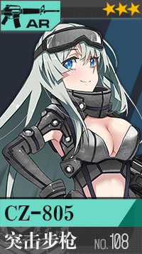 | 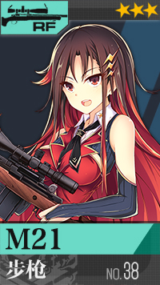 | ||
| 5章 M249 SAW | 6章 M1A1 | 7章 PSM | 8章 SCW |
| 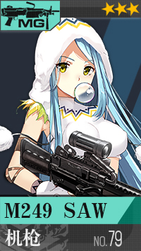 | 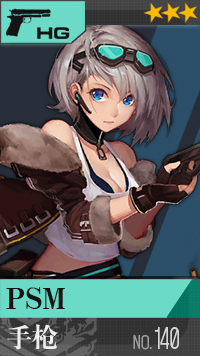 | ||
| 9章 Ak 5 | 10章 XM3 | 11章 Mk46 | 12章 MAT-49 |
| 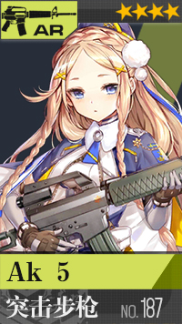 | 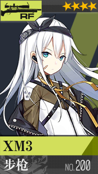 | 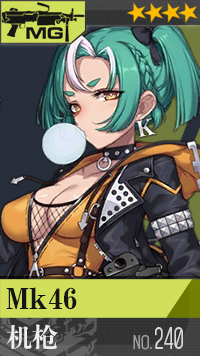 | 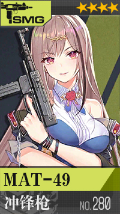 |
wiki更新
游戏信息导航
扩展信息导航
管理与编辑
工具
| 1章 格洛克 | 2章 FMG-9 | 3章 CZ-805 | 4章 M21 |
|---|---|---|---|
| 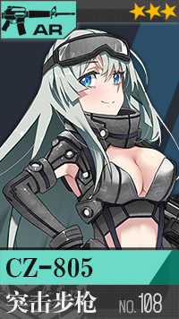 | 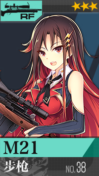 | ||
| 5章 M249 SAW | 6章 M1A1 | 7章 PSM | 8章 SCW |
| 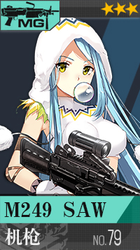 | 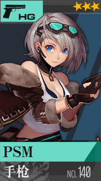 | ||
| 9章 Ak 5 | 10章 XM3 | 11章 Mk46 | 12章 MAT-49 |
| 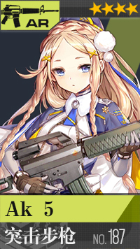 | 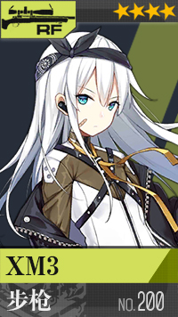 | 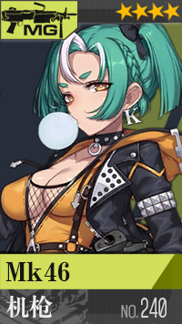 | 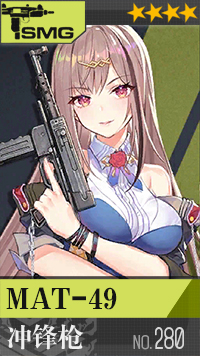 |
本页面最后编辑于2020年4月29日 (星期二) 08:41。
除非另有声明，本网站内容采用知识共享署名-非商业性使用-相同方式共享授权。